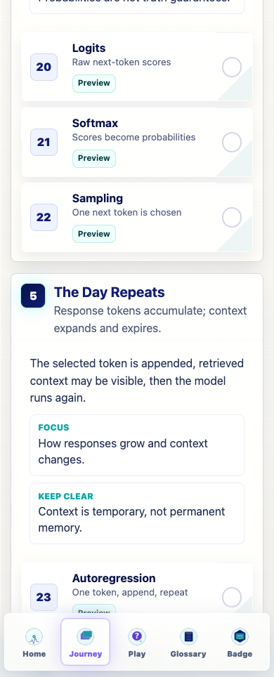
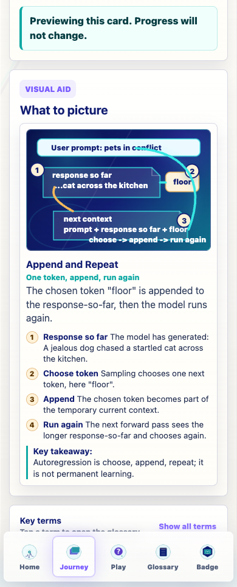
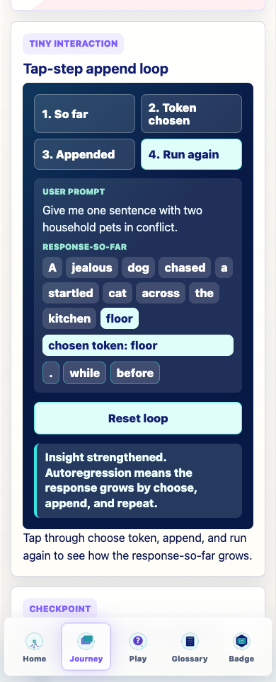
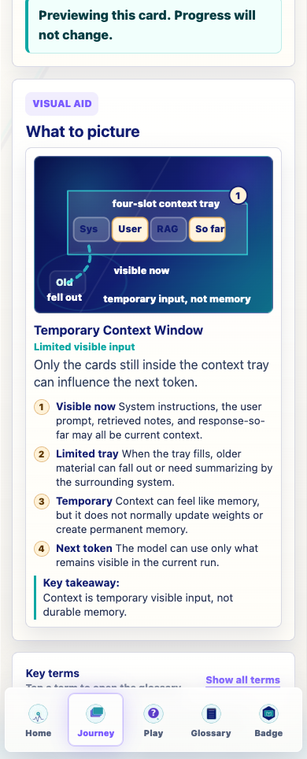
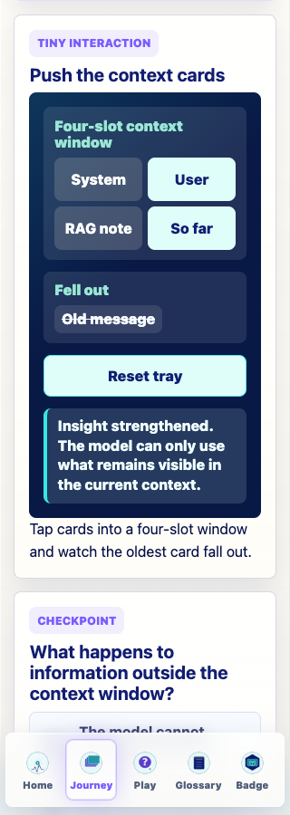
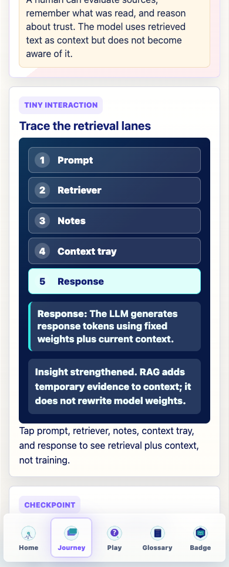
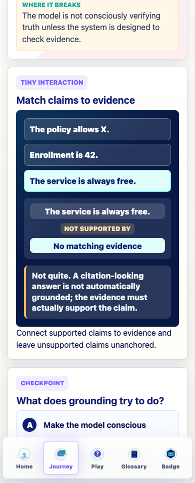
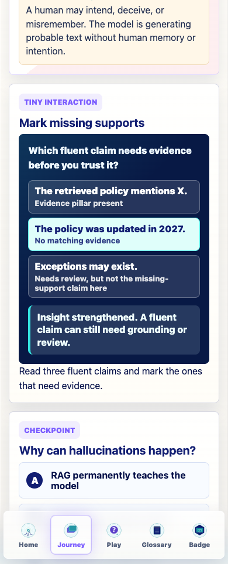
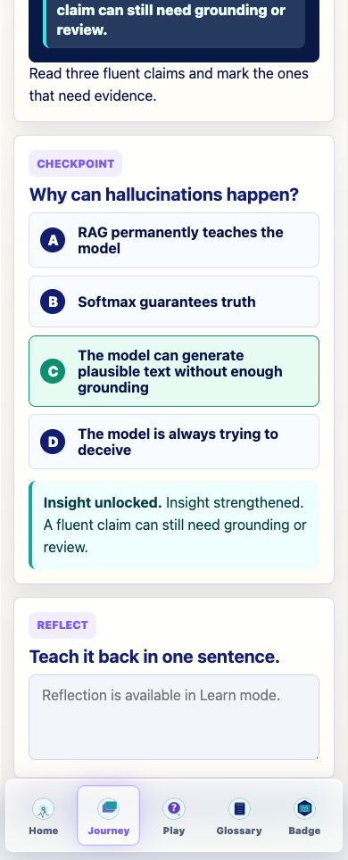

Prompt Life v0.22.1
The Day Repeats Implementation Report
This pass turns the Day Repeats stage into a concrete generation-and-evidence chain for mobile learners: choose one token, append it, run again, manage temporary context, retrieve evidence, ground claims, and watch for fluent unsupported output.
Build passed. No generated PNG assets added.
What Changed
- Upgraded Autoregression and Context Window to richer lesson architecture.
- Kept Journey order unchanged: Autoregression, Context Window, RAG, Grounding, Hallucinations.
- Added five specific lesson interactions for the stage.
- Reworked coded visuals for Autoregression, Context Window, Grounding, and Hallucinations.
- Preserved games, progress rules, checkpoint randomization, badge logic, dependencies, and Glossary Dojo work.
- Added the
Response-so-farglossary entry. - Bumped the visible app version to
v0.22.1. - Captured 320px and 390px screenshots with zero horizontal overflow.
Stage Chain
sampling chooses one token -> token is appended -> model runs again -> response-so-far grows -> context window limits what remains visible -> RAG can add retrieved evidence -> grounding connects claims to evidence -> hallucinations happen when fluent output outruns support.
Card Updates
| Card | New emphasis | Interaction |
|---|---|---|
| Autoregression | Uses the pet-conflict example, chosen token floor, appended response-so-far, and repeated forward pass. | autoregression-loop |
| Context Window | Shows system, user, retrieved note, response-so-far, and old message as temporary context cards. | context-window-tray |
| RAG and Retrieval | Preserves open-book AI and adds lane highlighting from prompt to response. | rag-lane-highlight |
| Grounding | Makes claim-to-evidence support visible and warns that citation-looking output is not automatically grounded. | grounding-claim-match |
| Hallucinations | Frames hallucinations as unsupported/fabricated generation, not lying or intent. | hallucination-support-check |
Verification
npm run typecheck: passed.npm run build: passed with the existing Vite large-chunk warning.npm run build:pages: passed with the existing Vite large-chunk warning.npm run audit:answers: passed.- Screenshot QA: 0 horizontal overflow at 320px and 390px.
- Preview-mode screenshot QA: localStorage progress remained
[].
Screenshots









Known Issues
- The existing Vite large-chunk warning remains.
- Correct checkpoint feedback still includes the app's global
Insight unlocked.prefix before lesson-specific feedback; this was left unchanged to avoid a global behavior change. - No generated Image 2 assets were added; Hallucinations remains the only optional future textless bridge candidate.